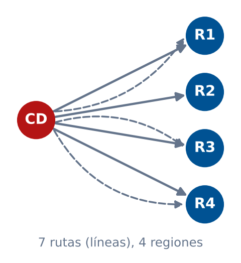
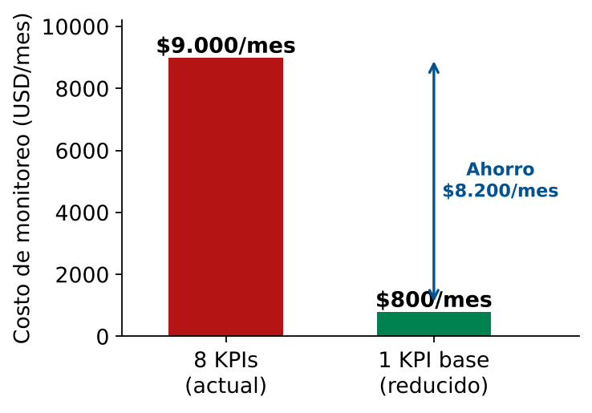
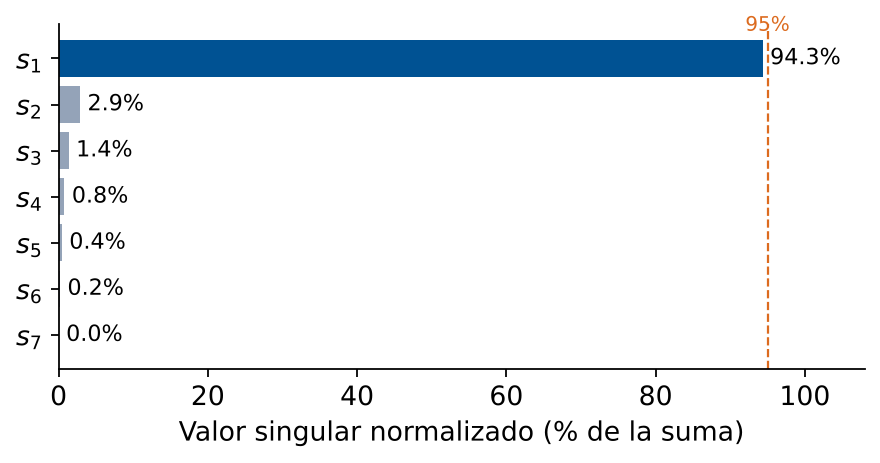

Módulo 4 — Integración con MATLAB
Matemáticas 2 — Clase 20
Clase 20 — Integradora
Esta es una clase integradora: se aplican todos los conceptos del Módulo 4 sobre un caso real de empresa logística.
Al finalizar, el estudiante será capaz de:
Pregunta del gerente:
"¿Podemos simplificar el modelo sin perder capacidad de decisión?"

Centro de distribución (CD) que abastece 4 regiones mediante 7 rutas
Tarea: determinar el rango de cada matriz e identificar variables redundantes.
| KPI | Descripción | Unidad | Costo monitoreo/mes |
|---|---|---|---|
| \(k_1\) | Distancia recorrida | km | $800 |
| \(k_2\) | Costo total de combustible | $ | $1500 |
| \(k_3\) | Tiempo de carga | horas | $600 |
| \(k_4\) | Tiempo de tránsito | horas | $700 |
| \(k_5\) | Peso transportado | toneladas | $500 |
| \(k_6\) | Número de paradas | cantidad | $900 |
| \(k_7\) | Emisión de CO₂ | kg | $1200 |
| \(k_8\) | Índice de satisfacción | 1–10 | $2800 |
| Costo total actual | $9.000/mes | ||
% Cargar y analizar D % Datos historicos de flujo (5 semanas x 7 rutas) D = [10 5 15 8 3 12 20; 4 2 6 3 1 5 8; 6 3 9 5 2 7 12; 20 10 30 16 6 24 40; 2 1 3 2 1 2 4]; fprintf('=== ANALISIS DE DATOS D ===\n') [R_D, piv_D] = rref(D); r_D = rank(D); nul_D = size(null(D),2); fprintf('Rango de D = %d\n', r_D) fprintf('Nulidad de D = %d\n', nul_D) fprintf('Rutas independientes (col. pivote): ') disp(piv_D) red_D = setdiff(1:7, piv_D); fprintf('Rutas redundantes: ') disp(red_D)
Rango de D = 2 | Nulidad = 5Rutas independientes: 1 4Rutas redundantes: 2 3 5 6 7
% Matriz de KPIs (7 rutas x 8 indicadores) K = [100 200 50 100 300 150 80 160; 50 100 25 50 150 75 40 80; 150 300 75 150 450 225 120 240; 80 160 40 80 240 120 64 128; 30 60 15 30 90 45 24 48; 120 240 60 120 360 180 96 192; 200 400 100 200 600 300 160 320]; costos = [800 1500 600 700 500 900 1200 2800]; % $/mes [R_K, piv_K] = rref(K); r_K = rank(K); fprintf('=== ANALISIS DE KPIs K ===\n') fprintf('Rango de K = %d (KPIs independientes)\n', r_K) fprintf('KPIs en la base: ') disp(piv_K) % Calcular ahorro kpi_eliminar = setdiff(1:8, piv_K); costo_actual = sum(costos); costo_reducido = sum(costos(piv_K)); ahorro = costo_actual - costo_reducido; fprintf('Costo actual: $%d/mes\n', costo_actual) fprintf('Costo reducido: $%d/mes\n', costo_reducido) fprintf('Ahorro mensual: $%d/mes (%.1f%%)\n', ahorro, 100*ahorro/costo_actual)
% Relaciones entre KPIs nombres = {'Distancia','Combustible','T.Carga','T.Transito',... 'Peso','Paradas','CO2','Satisfaccion'}; fprintf('=== RELACIONES ENTRE KPIs ===\n') base_K = K(:, piv_K); % columnas pivote (base) red_K = setdiff(1:8, piv_K); for j = red_K coefs = base_K \ K(:,j); fprintf('%s = ', nombres{j}); for k = 1:length(piv_K) if k > 1 && coefs(k) >= 0 fprintf(' + '); end fprintf('%.2f * %s', coefs(k), nombres{piv_K(k)}); end fprintf('\n'); end % Verificar precision de las relaciones for j = red_K coefs = base_K \ K(:,j); error_rel = norm(base_K*coefs - K(:,j)) / norm(K(:,j)); fprintf('Error relativo KPI %d: %.2e\n', j, error_rel) end
Relaciones obtenidas (rango 1): Combustible = 2·Dist, T.Carga = 0.5·Dist, T.Tránsito = 1·Dist, Peso = 3·Dist, Paradas = 1.5·Dist, CO₂ = 0.8·Dist, Satisfacción = 1.6·Dist. Ruta 1 del nuevo plan (110 km): 110 220 55 110 330 165 88 176. Error de reconstrucción ≈ 0.
% Modelo reducido: solo KPIs independientes K_red = K(:, piv_K); fprintf('Dimension modelo reducido: %d rutas x %d KPIs\n',... size(K_red,1), size(K_red,2)) % Reconstruir KPIs eliminados desde el modelo reducido K_reconstruido = zeros(size(K)); K_reconstruido(:, piv_K) = K_red; for j = setdiff(1:8, piv_K) coefs = K_red \ K(:,j); K_reconstruido(:,j) = K_red * coefs; end % Error de reconstruccion (debe ser ~0) err_total = norm(K - K_reconstruido, 'fro') / norm(K,'fro'); fprintf('Error de reconstruccion: %.2e\n', err_total) % Nuevo plan: se mide SOLO el KPI base (Distancia) en las 7 rutas dist_nueva = [110; 85; 160; 90; 35; 125; 210]; % km por ruta K_nuevo = zeros(7,8); K_nuevo(:, piv_K) = dist_nueva; % KPI medido for j = setdiff(1:8, piv_K) coefs = K_red \ K(:,j); % factor (rango 1 => escalar) K_nuevo(:,j) = K_nuevo(:, piv_K) * coefs; % KPI calculado end disp(array2table(K_nuevo, 'VariableNames', nombres))

Los 7 KPIs restantes se calculan desde la Distancia
Pero: ¿es seguro eliminar 7 KPIs de 8?
| Dimensión | Favor de reducir | Contra de reducir |
|---|---|---|
| Costo | Ahorro de $8.200/mes = $98.400/año | Costo de reimplementación si hay error |
| Precisión | Si los KPIs son exactamente lineales, reconstrucción perfecta | En datos reales hay ruido: la relación puede no ser exacta |
| Control | Modelo más simple, más fácil de comunicar | Se pierde visibilidad directa de 7 indicadores |
| Riesgo | Menor complejidad = menos puntos de fallo | Si la relación cambia, el modelo queda inválido |
| Regulación | — | Algunos KPIs (CO₂, satisfacción) pueden ser obligatorios |
% Que pasa con datos reales (con ruido)? % Agregar ruido del 5% a los datos rng(42); % semilla para reproducibilidad ruido = 0.05 * randn(size(K)); K_ruidoso = K + K .* ruido; % Rango nominal vs efectivo r_nominal = rank(K); r_ruidoso = rank(K_ruidoso); fprintf('Rango sin ruido: %d\n', r_nominal) fprintf('Rango con ruido: %d\n', r_ruidoso) % Valores singulares (cuanto "peso" tiene cada dimension) [~,S,~] = svd(K_ruidoso); sv = diag(S); sv_norm = sv / sum(sv); fprintf('\nValores singulares normalizados:\n') for i = 1:length(sv) barra = repmat('*', 1, round(30*sv_norm(i))); fprintf(' s%d = %6.2f (%.1f%%) %s\n', i, sv(i), 100*sv_norm(i), barra) end % Cuantos valores singulares acumulan el 95% de la suma total? acum = cumsum(sv_norm); r_efectivo = find(acum >= 0.95, 1); fprintf('\nKPIs necesarios para el 95%%: %d\n', r_efectivo)

Una realización del ruido del 5% (los valores exactos cambian con la semilla). K tiene 7 filas ⇒ 7 valores singulares.
Con ruido del 5%, el rango numérico pasa de 1 a 7, pero \(s_1\) concentra ≈94–95%: bastan ~1–2 KPIs para capturar el 95% (suma de valores singulares).
Con los resultados del análisis, el equipo debe recomendar una de estas opciones:
Monitorear solo 1 KPI (base matemática).
Ahorro: $8.200/mes
Riesgo: alto si datos tienen ruido.
Monitorear los KPIs independientes según análisis con ruido (aprox. 3).
Ahorro: ~$5.000/mes
Riesgo: moderado.
Eliminar solo los KPIs sin valor regulatorio ni operativo crítico.
Ahorro: ~$2.500/mes
Riesgo: bajo.
% Validar el modelo reducido con datos reales % Dividir datos: rutas 1-4 para entrenar, ruta 5 para probar K_train = K(1:4, :); K_test = K(5, :)'; % ruta 5 como prueba % Construir modelo con datos de entrenamiento [~, piv_train] = rref(K_train); base_train = K_train(:, piv_train); % Predecir KPIs completos desde base reducida k_test_base = K_test(piv_train); % KPIs base medidos k_pred = zeros(8,1); k_pred(piv_train) = k_test_base; for j = setdiff(1:8, piv_train) coefs = base_train \ K_train(:,j); k_pred(j) = k_test_base' * coefs; % usa los KPIs base de la ruta de prueba end % Calcular errores de prediccion (ternary: funcion auxiliar definida en clase20_mini_caso3.m) errores = abs(k_pred - K_test) ./ abs(K_test) * 100; fprintf('Errores de prediccion (%%):\n') for i = 1:8 estado = ternary(ismember(i,piv_train),'[BASE]','[PRED]'); fprintf(' KPI %d %s: %.2f%%\n', i, estado, errores(i)) end fprintf('\nError promedio en KPIs predichos: %.2f%%\n',... mean(errores(setdiff(1:8,piv_train))))
0.00%. Repetir con K_ruidoso para ver errores realistas.| Criterio | Logrado (3) | En proceso (2) | Inicial (1) |
|---|---|---|---|
| Cálculo de rango y nulidad | Correcto con MATLAB y verificado | Correcto con MATLAB, sin verificar | Con errores |
| Identificación de base | Identifica columnas pivote e interpreta logísticamente | Identifica columnas pivote sin interpretación | No identifica base |
| Relaciones entre variables | Expresa variables redundantes como comb. lineal correcta | Expresa con pequeños errores | No expresa relaciones |
| Análisis de trade-offs | Considera costo, riesgo y regulación | Considera 1-2 dimensiones | No analiza trade-offs |
| Decisión ejecutiva | Fundamentada con números y argumentos | Parcialmente fundamentada | Sin fundamentación |
.mlx) o PDF con:clase20_mini_caso3.m con los 6 pasos.rref, null, rank, svd. https://www.mathworks.com/help/matlab/clase20_mini_caso3.m, Rúbrica de evaluación.Espacios Vectoriales — Completado
Próximo: Módulo 5 — Regresión Lineal